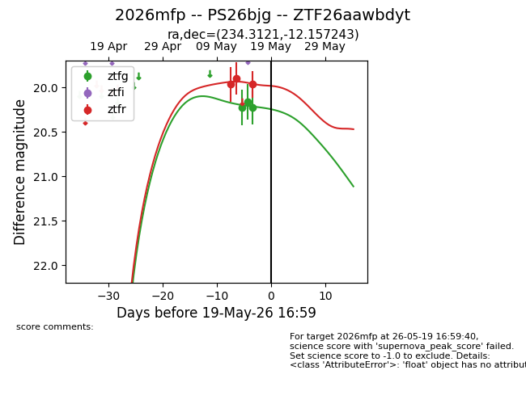
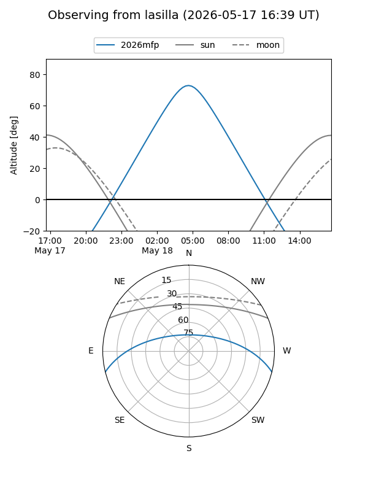
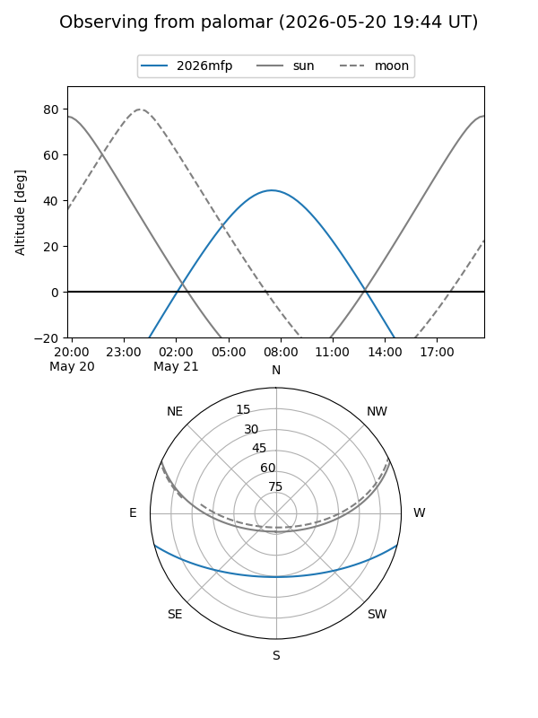
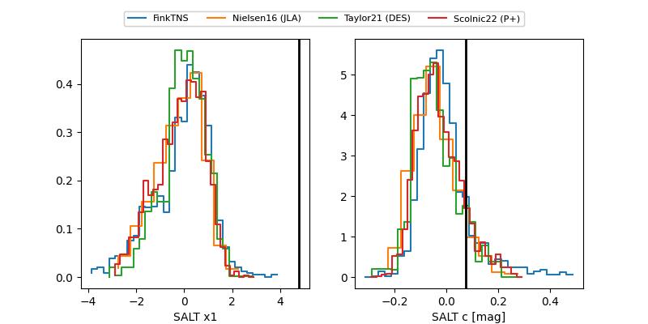

2026mfp
Target 2026mfp at 2026-05-19 17:01
Aliases and brokers:
FINK: link
Lasair: link
ALeRCE: link
TNS: link
YSE: link
alt names
ZTF26aawbdyt (ztf,fink_ztf)
2026mfp (tns,yse)
PS26bjg (panstarrs)
Coordinates:
equatorial (ra, dec) = 234.3121,-12.15724
equatorial (HMS+DMS) = 15:37:14.91,-12:09:26.08
galactic (l, b) = (354.0675,+33.78382)
Flags:
Photometry:
last ztfg=20.22, ztfr=19.97
3 ztfg, 3 ztfr detections
Lightcurve

Visibility


Additional plots
